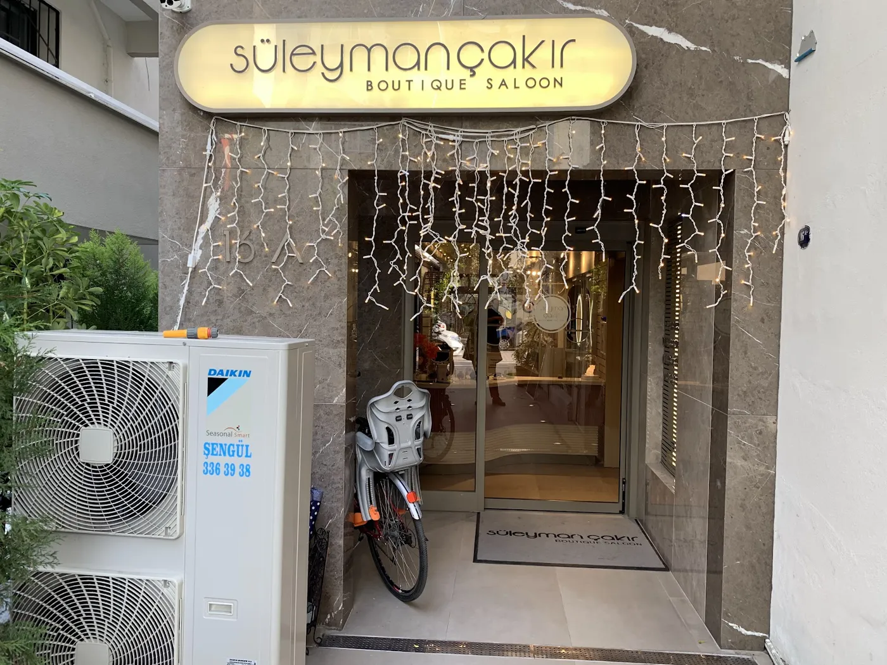

Saç kesimi
Yüz hattınıza ve tarzınıza uygun, sizi dinleyerek yapılan kesim.
Karşıyaka · Kuaför
Bostanlı mahallesinde bir kuaför. Google'da 4,7 puan ve 363 yorumla Karşıyaka'nın sevilen adreslerinden.
4,7★
363 yorum
Google'da


Müşterilerimizin yorumlarında en çok andığı hizmetler.
Yüz hattınıza ve tarzınıza uygun, sizi dinleyerek yapılan kesim.
Ten renginize uygun tonlar ve eşit, canlı bir renk.
Yumuşak geçişli, doğal ışıltılı renk çalışmaları.
Yüzünüze uygun kaş tasarımı ve kirpik uygulamaları.
Fiyat yapılacak işe göre değişir. WhatsApp'tan yazın, size hemen bilgi verelim.
Online randevu
Hizmeti, günü ve saati seçin. Talebiniz WhatsApp'tan bize ulaşır, hemen dönüş yaparız.
1 Hangi hizmet?
2 Hangi gün?
3 Hangi saatler uygun?
4 Adınız (isteğe bağlı)
Talebiniz WhatsApp'tan salona iletilir. Salon size dönüp saati onaylar.


★★★★★
"Orhan Beyde yaptırdım. Çok beğendim ve çok güzel oldu sürekli saçlarımlarımı izliyorum ince ustalık ve titizlikle çalıştı kendisi. Tekrardan teşekkür ederim harika bir salon😊."
★★★★★
"İlgi ve hizmet harikaydı. Çok memnun kaldım. Ayrıca Orhan Bey saçlarıma en uygun ve bana yakışacak rengi önerdi ve sonuç mükemmel oldu. Kendisine teşekkür ederim."
★★★★★
"Bayram yoğunluğuna rağmen randevu almakta sorun yaşamadım, herkes çok ilgili ve nazik. İlk kez gitmenin verdiği tereddütü Kıvanç bey giderdi 🙏kesim işlemi yapılmıştı , çok memnun kaldım, Herşeyden önce güleryüzlü , ilgili tüm çalışanlarına teşekkürler"
Sayfadaki WhatsApp düğmesine basıp yazabilir ya da bizi arayabilirsiniz. Randevu alarak gelmenizi öneririz.
Pazartesi: 09:00 - 19:00; Salı: 09:00 - 19:00; Çarşamba: 09:00 - 19:00; Perşembe: 09:00 - 19:00; Cuma: 09:00 - 19:00; Cumartesi: 09:00 - 19:00; Pazar: Kapalı
Bostanlı, Aşık Veysel Sk No:16/A, 35590 Karşıyaka/İzmir, Türkiye. Sayfadaki harita ile yol tarifi alabilirsiniz.
Evet, kredi kartı ve banka kartları ve nfc ile mobil ödeme geçerlidir.
Fiyat yapılacak işe göre değişir. WhatsApp'tan yazın, size bilgi verelim.
Bostanlı, Aşık Veysel Sk No:16/A, 35590 Karşıyaka/İzmir, Türkiye
+90 530 509 10 34Pazartesi
09:00 - 19:00
Salı
09:00 - 19:00
Çarşamba
09:00 - 19:00
Perşembe
09:00 - 19:00
Cuma
09:00 - 19:00
Cumartesi
09:00 - 19:00
Pazar
Kapalı
Harita Google tarafından gösterilir.
Adınızı ve numaranızı bırakın, size dönelim.
Teşekkürler ! Mesajınız hazır. İletmek için düğmeye basın, WhatsApp'ta mesajınız yazılı açılacak.
WhatsApp'ta gönderÇerez kullanmıyoruz. Google haritası yalnız izninizle açılır. Ayrıntılar